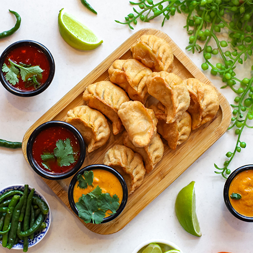

Nepali Style Mo:Mos

Momo, a beloved dish in Nepal, is believed to have originated from Tibetan immigrants who brought their culinary traditions with them. It is thought to have evolved from Tibetan dumplings called "momos," which were traditionally filled with meat and spices. In Nepal, momo gained popularity and underwent adaptation to suit local tastes, leading to variations in fillings and flavors. The dish quickly became a staple in Nepalese cuisine, served in homes, restaurants, and street stalls across the country. Today, momo is not only enjoyed in Nepal but has also gained international recognition, delighting taste buds around the world.
Ingredients to make Nepali Style Mo:Mos
- All-purpose flour (for the dough)
- Water
- Minced meat (such as chicken, pork, or lamb)
- Cabbage
- Carrots
- Onions
- Garlic
- Ginger
- Salt
- Pepper
- Ground cumin
- Ground coriander
- Soy sauce (for the dipping sauce)
- Tomato puree (for the dipping sauce)
- Chili paste (for the dipping sauce)
- Vinegar or lemon juice (for the dipping sauce)
Directions
- For a typical filling for momo, finely chop 1 cup of cabbage, 1/2 cup of carrots, and 1/4 cup of onions, then mix with 1/2 pound of minced meat (e.g., chicken, pork, or lamb), seasoning with 1 teaspoon each of salt, pepper, minced garlic, minced ginger, and 1/2 teaspoon each of ground cumin and coriander.
- Combine 2 cups of all-purpose flour with 3/4 cup of water, knead until smooth, then allow it to rest for 30 minutes under a damp cloth
- Divide the rested dough into small balls, then roll each into palm-sized thin circles using a rolling pin.
- Fill the center of each dough circle with a spoonful of filling, fold it over to form a half-moon shape, and pinch and pleat the edges to seal.
- Place the filled momo in a steamer basket lined with parchment paper or cabbage leaves, then steam over boiling water for 10-15 minutes until cooked through and tender.
- While the momo is steaming, you can prepare a dipping sauce. A popular Nepali dipping sauce for momo includes a mixture of tomato puree, minced garlic, ginger, soy sauce, chili paste, and a splash of vinegar or lemon juice.
- Serve the freshly cooked momo hot with the dipping sauce alongside, relishing them as a delightful Nepali-style snack, appetizer, or main course.